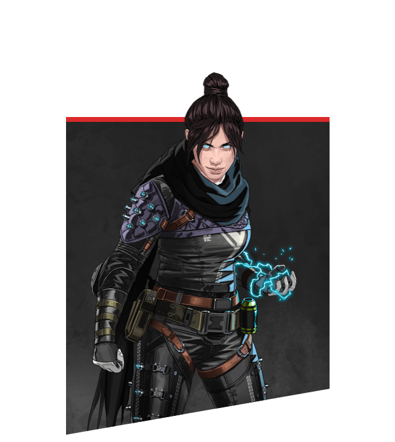
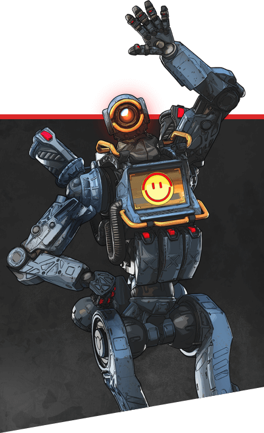

| Class |
Name |
Ability |
Image |
| Defense |
Wattson |
Wattson is an electricity-based Defensive Legend. Her tactical ability Perimeter Security, Perimeter Security places fence poles with connecting beams of electricity that damage and stun enemies that pass through the beams. Her passive ability Spark of Genius, Spark of Genius causes her shields to slowly regenerate over time and causes an Ultimate Accelerant, Ultimate Accelerant to fully recharge her ultimate ability. Her ultimate ability Interception Pylon, Interception Pylon destroys all grenades, missiles, and other throwables when they get near, and will also recharge all players' shields within a certain radius. |
 |
| Atack |
Wraith |
Offensive Legend, Wraith can reposition and flank enemies with her abilities. Wraith's tactical ability Into the Void, Into the Void allows her to reposition or take cover while being invincible for 4 seconds. Wraith's ultimate ability Dimensional Rift, Dimensional Rift places an entrance and exit portal that allows her squad to be safely transported over long distances. Her passive abilityVoices from the Void, Voices from the Void gives her and her teammates audible warnings about enemies aiming at them. |
 |
| Recon |
Valkyrie |
Valkyrie is a Recon, Recon Legend who specializes in flight. Her passive, VTOL Jets, VTOL Jets allow her to fly for a few seconds but can only use Missile Swarm, Missile Swarm and while skydiving, she can mark enemies. Her tactical, Missile Swarm, Missile Swarm can be good for dealing damage, especially while in her passive. Her ultimate, Skyward Dive, Skyward Dive, can be used to skydive into a new area for exploration. |
 |
| Recon |
Pathfinder |
Pathfinder is a Recon, Recon Legend very useful on movement and rotation. His Grappling Hook, Grappling Hook ability allows you to reach higher places and to tactically reposition while his Insider Knowledge, Insider Knowledge and Zipline Gun, Zipline Gun abilities allow him to support your squad by letting them know the position of the next ring and provide a zipline on-the-fly to allow quick escapes and to reposition respectively. |
 |